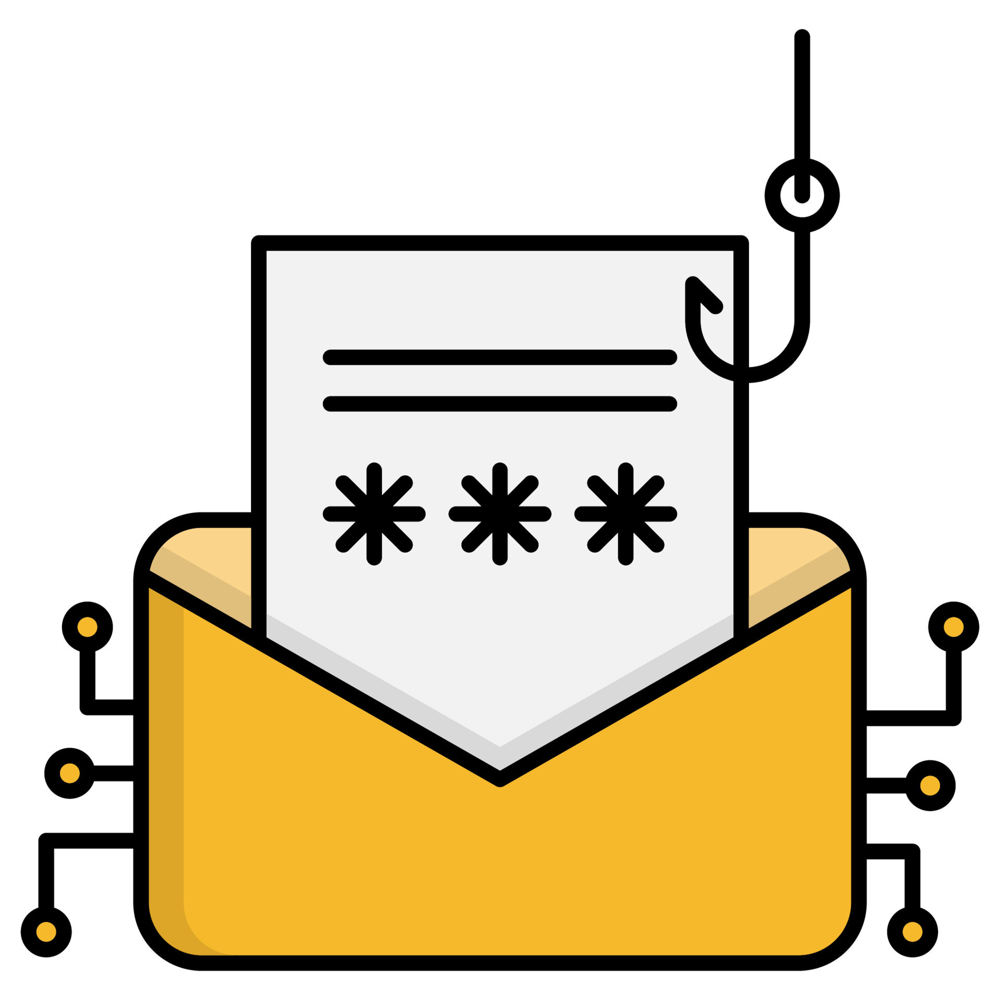
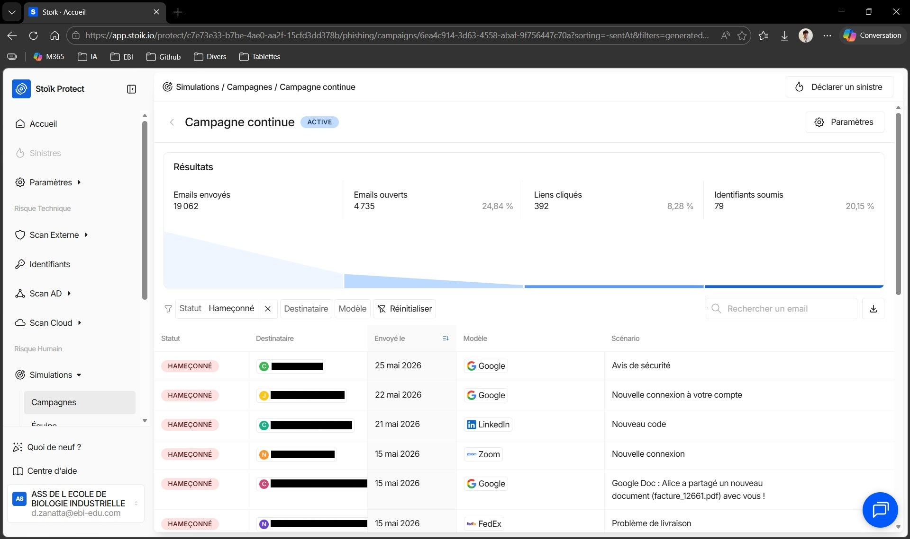
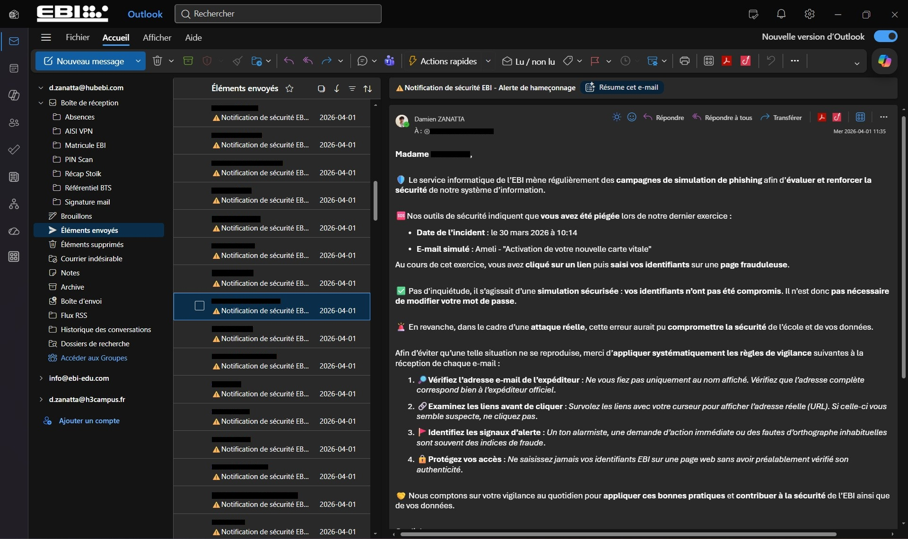
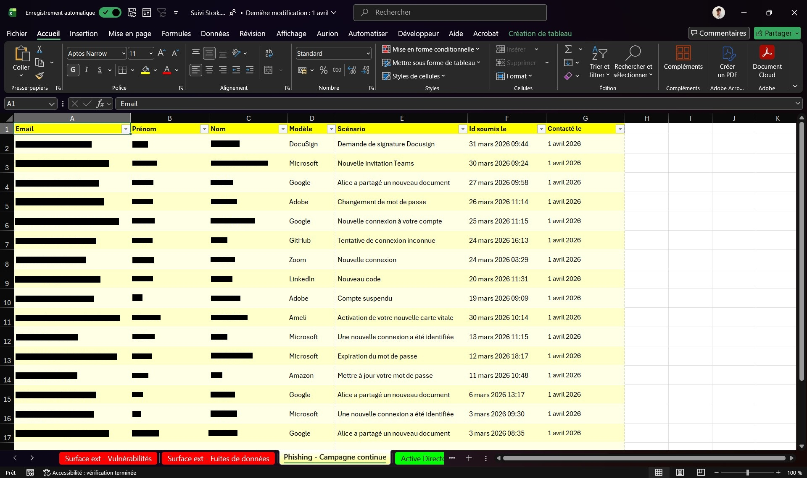

Présentation
Consultation des résultats, sensibilisation des utilisateurs concernés et traçabilité des actions réalisées.

Consultation des résultats, sensibilisation des utilisateurs concernés et traçabilité des actions réalisées.
Les captures ci-dessous constituent les éléments de preuve associés à la réalisation. Elles sont conservées dans le dépôt afin de documenter la démarche et les résultats.




Cette réalisation m’a permis de comprendre l’intérêt des campagnes de phishing simulé pour transformer un risque en action pédagogique.
J’ai appris à sensibiliser sans stigmatiser, en donnant des conseils simples et directement applicables.